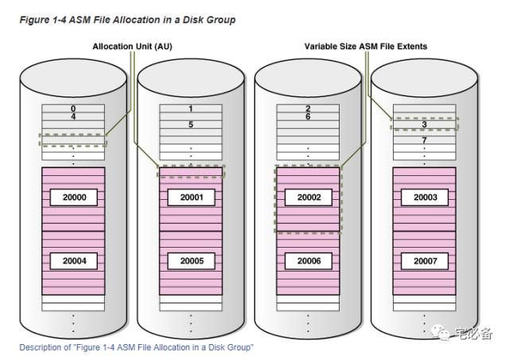
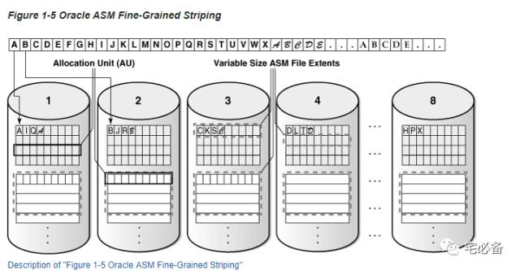
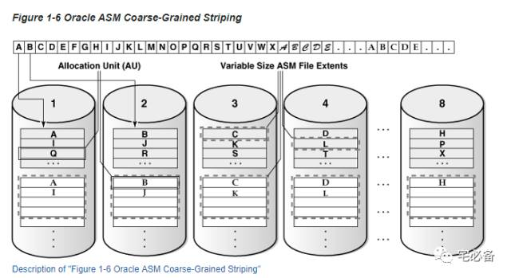
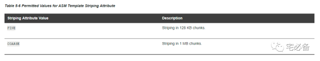
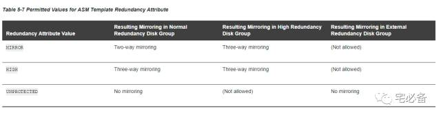
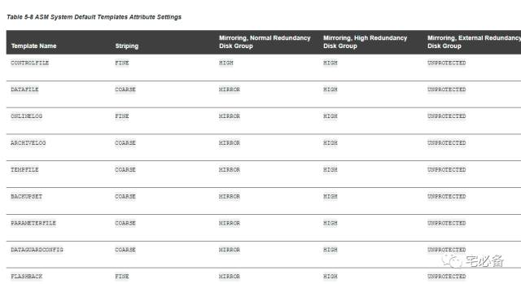

Oracle ASM Files
原创 2017-10-17 Oracle 宅必备
这个专题讲ASM相关的内容
内容主要来自官方文档，加上一些自己的理解及实践
这节讲ASM文件，并介绍其如何在磁盘组中分布的
1. ASM文件(ASM Files)
存储在ASM 磁盘组的文件称之为ASM 文件，Oracle数据库和ASM通过ASM 文件来交互
磁盘组支持如下类型的文件
-
控制文件
-
数据文件，临时文件，数据文件拷贝
-
SPFILEs
-
在线重做日志，归档日志，闪回日志
-
RMAN备份
-
灾难复原配置
-
Change tracking bitmaps
-
数据泵dump集
注意：Oracle可执行和 ASCII 文件，例如alert日志，trace文件等无法放在ASM 磁盘组中
ASM会自动命令ASM文件名，当然你也可以手动指定路径和名称
名称路径最前面为+号，后面跟上磁盘组名称，如+HDB_DATA
2. 区(Extents)
ASM Extents为分配空间的最小单位，一个区只会包含在一个磁盘中，一个区包含一个或多个AU
Oracle ASM 支持可变大小的区(Variable size extents)

上图显示出了ASM 文件在磁盘组中的分配情况
最小的长方形代表一个AU
-
前20000个extent大小等于AU大小
-
之后的20000个extent(20000 - 39999)大小等于8个AU的大小,即可变大小的区
-
之后的区就是64个AU的大小(图中未显示)
可以看到文件的前8个extent分布在磁盘组中的各个磁盘中
3. ASM条带化(ASM Striping)
ASM Striping 有2个用处
-
将文件分散在磁盘组各个磁盘中来平衡负载–Coarse Grained
-
减少I/O延迟–fine grained
为了达到目的，ASM 通过将 ASM文件分成一个个条带(stripes) ，然后将其分散在磁盘组中磁盘中
Oracle提供2种方式的striping
3.1 细粒度条带(fine-grained stripe )
fine-grained stripe 的stripes 的大小始终为128K

我们将ASM文件分成很多128 K 的chunks，每个AU也划分为每个128K的chunks，首先放入第一个磁盘的第一个extent，然后第二个磁盘的第一个extent，然后循环起来直至ASM 文件全部放置完成
可以看出这种方式将文件细分成很小的大小分散在各个磁盘中，提高了I/O的响应速度，对并发高，要求延迟小的OLTP系统有利
3.2 粗粒度条带( Coarse-Grained Striping)
Coarse-grained stripe 的stripes 的大小为AU的大小

我们将ASM文件分解成很多块，每个大小为AU的大小,首先放入第一个磁盘的第一个extent，然后第二个磁盘的第一个extent，以此类推直至所有ASM文件放置完成
可以看出这种方式每次I/O可访问更多的数据，对对吞吐量要求较高的OLAP系统有利
4. 文件模板(File Templates)
模板为一个集合，里面包含冗余级别和条带化的属性值，在建立文件时可指定模板
ASM 提供默认模板供不同的文件类型使用，你可以自定义其中的属性来满足需求
4.1 Striping 属性可选值

4.2 Redundancy 属性可选值

4.3 默认模板属性值
下图为一些文件类型默认的模板属性值

好了，ASM File 就这么多了，下节讲ASM的管理